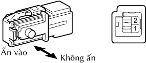

CÔNG TẮC CẢNH BÁO MỞ KHOÁ > KIỂM TRA
Xem Phần Chuẩn Bị
Kích chuột vào đây
1. KIỂM TRA CỤM CÔNG TẮC CẢNH BÁO MỞ KHOÁ

Đo điện trở của công tắc.
Điện trở tiêu chuẩn:
Nối dụng cụ đo
Điều kiện
Điều kiện tiêu chuẩn
1 - 2
Ấn
Dưới 1 Ω
Không ấn
10 kΩ trở lên
Nếu kết quả không như tiêu chuẩn, thay cụm công tắc.